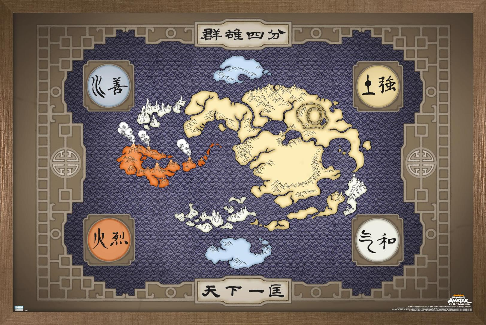
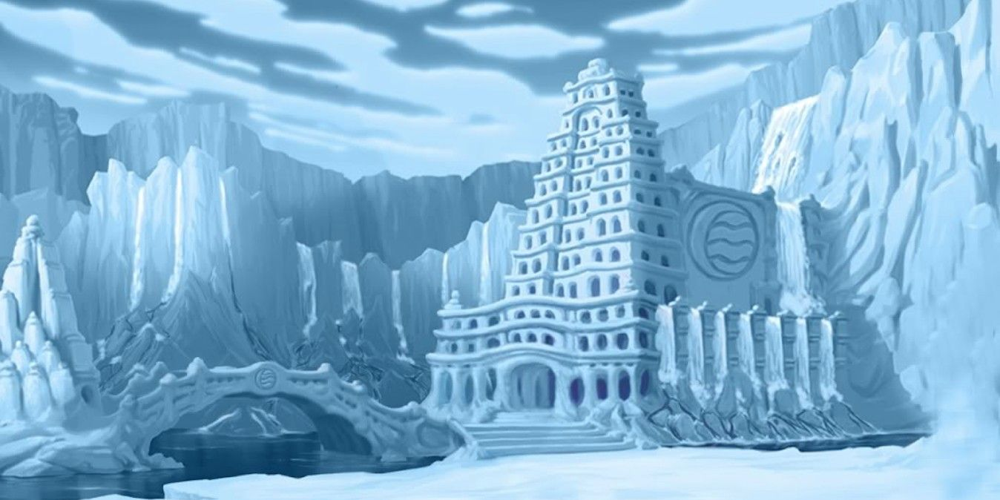
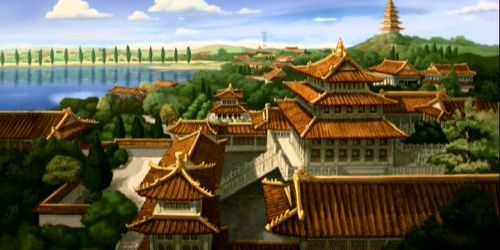
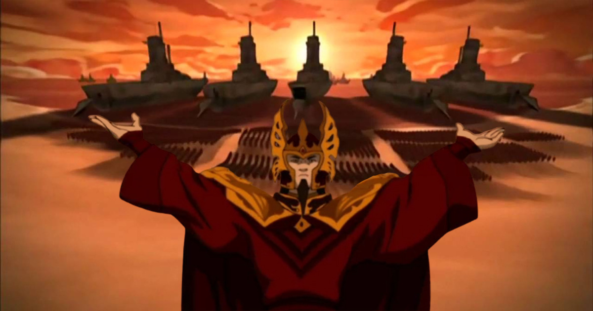
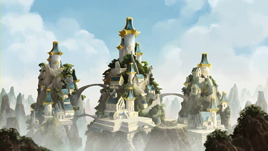

Mapa del mundo de Avatar
Geografía
El mapa Terrestre está dividido en cuatro naciones distintas. Al final de la Guerra de los Cien Años, el Señor del Fuego Zuko y el Avatar Aang transformaron las colonias de la Nación del Fuego ubicadas en el Reino Tierra en un país independiente, la República Unida de Naciones. Cada lugar tiene sus propias distribuciones geográficas, civilizaciones, climas y demografía, así como una gran variedad de accidentes geográficos.
Naciones
El mundo de Avatar está dividido en cuatro grandes naciones (cada una con el nombre de uno de los cuatro elementos), las cuales el Avatar debe mantener en armonía: Las Tribus Agua; El Reino Tierra, La Nación del Fuego y Los Nómadas del Aire.
Las Tribus Agua
La Tribu Agua es un término colectivo para las personas, de las cuales, unos pocos practican el arte del Agua Control, que siguen un sistema de gobierno en la forma de una jefatura tribal. Aunque los miembros de la Tribu Agua normalmente habitan en las regiones polares, el Polo Norte y el Polo Sur, existe una pequeña población de Maestros Agua que habitan en el pantano brumoso en el territorio del Reino Tierra.
El Reino Tierra
El Reino Tierra es un continente enorme liderado por el Rey Tierra y es el hogar de las personas que practican el arte de la Tierra Control. Siendo la mayor de las cuatro naciones, es étnicamente diversa, con una variación de las costumbres y tradiciones culturales. La gente del Reino Tierra es fuerte y persistente. La geografía del Reino Tierra varía enormemente, desde bosques a desiertos ardientes y de terrenos montañosos a llanuras cubiertas de hierba.
La Nación del Fuego
La Nación del Fuego es el hogar de las personas que practican el arte del Fuego Control y es una monarquía absoluta dirigida por el Señor del Fuego. Al estar compuesta por varias islas principales y situadas en el ecuador del planeta, la nación es considerada como un archipiélago. Su economía es la más grande y poderosa del mundo, con un sector industrial fuerte y avanzados desarrollos tecnológicos.
Los Nómadas del Aire
Los Nómadas Aire son una civilización compuesta por personas que practican el arte del Aire Control. Habitaban cuatro principales Templos Aire, cada uno construido en ubicaciones remotas, a los cuales sólo se podía llegar fácilmente con el bisonte volador. Los Nómadas Aire son un grupo muy espiritual. Su economía se basaba exclusivamente en la agricultura, y aunque es la más pequeña de las cuatro naciones, la totalidad de sus miembros son Maestros.
